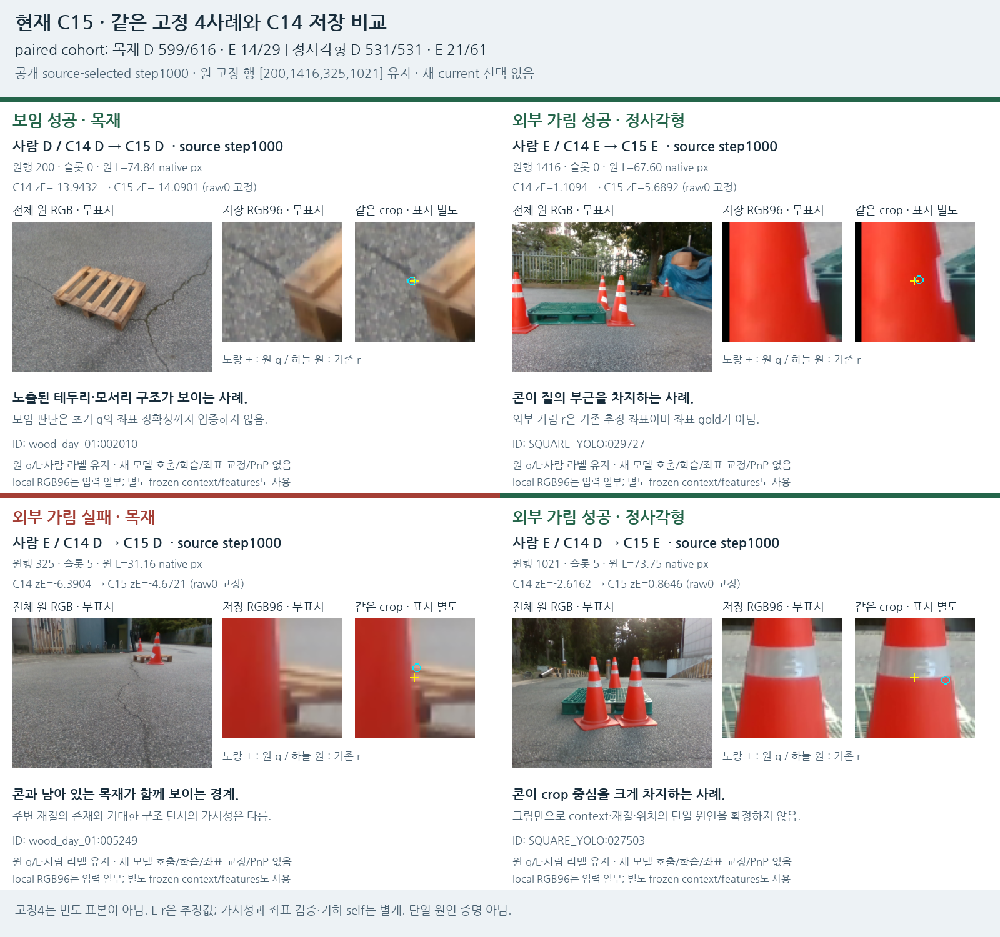
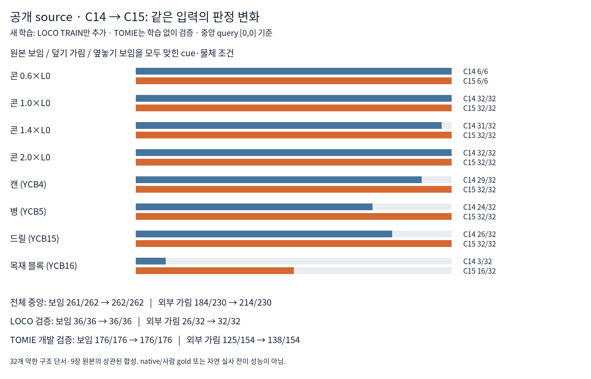

C15 실제 학습·평가 완료 · 목표는 계속 진행 중
공개 source 추가 학습이 실사 외부 가림에도 일부 전이됐습니다
외부 가림 정답 15/90 → 35/90, 보임 정답 1,130/1,147 유지. 아직55개 외부 가림을 놓치므로 해결이라고 부르지 않습니다.
모델 선택은 공개 검증14개 cohort의 BCE로 고정했습니다. 현재223장은 학습·정규화·문턱·checkpoint·모델 선택에 사용하지 않았습니다. 초기 q/L과 기하 self 경로를 유지했고 PnP는0입니다.
실사 전체 비교: 같은 초기 query와 같은 사람 라벨
목재105장
정사각형118장
행은 사람 D/E, 열은 모델 보임/가림/보류입니다. 보류는 recall 분모에서 빼지 않습니다. Self는 이 D/E표에서 제외합니다. v61은 한 pixel의 target 존재, 기존 실사 모델은 평가 촬영 도메인에서 학습한 이전 기준선으로 목표·학습 자료가 서로 다릅니다. C11은 과거 실험이고 C15도 외부 가림 합계35/90으로 같습니다. 이 표로 checkpoint나 모델을 다시 선택하지 않았습니다.
기존 실사 모델은 외부 가림83/90을 잡지만 보임655/1147·보류177/1237입니다. C15는 보임을 더 많이 유지하지만 외부 가림 recall은 아직 낮습니다. 전체 혼동행렬·P/R·보류 CSV
실제로 바뀐 crop과 남은 실패

같은4사례를 유지했습니다. 원행1021은 콘이 crop 중심을 차지하는데도 보임이던 판정이 C15에서 가림으로 바뀌었습니다. 원행325의 콘·목재 경계는 아직 보임으로 놓칩니다. 노출된 모서리200과 기존 가림 성공1416은 유지됩니다.
진단용 고정4개이며 전체 빈도 표본이 아닙니다. 가려진 E reference는 추정값일 수 있어 좌표 정답으로 보지 않습니다. 그림의 표시점은 별도 복사본이며 모델 입력에는 넣지 않았습니다.
무엇을 학습했고 공개 검증에서는 무엇이 바뀌었나

이전 source46,108행을 유지하고, 공개 팔레트32cue의4,896행을 추가했습니다. 새 학습 손실에 들어간 것은 원래 LOCO TRAIN6cue/3원본의보임450·외부 가림396입니다. TOMIE22cue는 학습에 넣지 않았습니다. DINO의1928개 특징과64차원 hidden을 쓰는 head는 유지하고 C14 가중치에서1,000회 갱신했습니다.
기존128개와 새64개를 함께 학습했습니다. 새64개는 덮기E32·원본보임D16·같은물체를옆으로옮긴D16입니다. 기존 source의15개 회귀 검사를 모두 통과했습니다. 공개 검증14cohort 평균BCE는0.10109→0.04267로 줄었고 source에서step1000을 선택했습니다.
중앙 query에서 공개 원본+sham 보임은261/262→262/262, 외부 가림은184/230→214/230입니다. 남은 중앙 가림16개는 모두 TOMIE의 목재 블록 조건입니다. source 원본 수치
32cue/9원본의 상관된 파생 자료이며 독립 실사4,896장이 아닙니다. LOCO5원본은 기존 source와 같은fold에서 겹칩니다. TOMIE4원본은 이전 학습 원본과 해시 겹침이 없지만 같은episode라 폭넓은 독립 검증을 뜻하지 않습니다. 공개 구조 cue는 약한 조건부 AUX이며 native 키포인트/사람 gold가 아닙니다.
좌표 오류·자기 가림·보류를 구분했습니다
사람이 클릭한 보임 reference와 초기 query의 오차가3px 이하인 사례는 목재153/153, 정사각형223/223 모두 보임으로 유지했습니다. 이것은 가시성 판정 결과이며 좌표가 맞는지 검증하는 별도 head는 아닙니다.
목재의 전체 human-self136개에서 C15 raw는15개를 binary 가림으로 응답하고, 기존 기하 경로를 합치면115개를 걸러냅니다. 이 수치를 learned self 분류라고 해석하지 않습니다. 동일 query 비교에 남는 self21개는 모두 보임으로 남으며, 정사각형에는 human-self gold가 없습니다.
전체1,784슬롯을 유지했고 원래 입력 미가용45개, 추가 보류0개입니다. 위 paired D/E에서는 보류0입니다. Self 진단 · 3px 이하 보임
현재 결론과 다음 검증
공개 source에서 확인한 실패를 학습으로 일부 개선했고 실제 촬영 외부 가림도20개 추가 검출했습니다. 목표 자체를 낮춰야 한다는 증거는 없지만, 일반화가 충분하다는 증거도 아직 없습니다. 실제 가림55개 누락과 공개 TOMIE 목재 블록 실패가 남습니다.
다음 source 실험은 공개 검증곡선의 endpoint 미수렴과 부족한 독립 TRAIN 다양성을 구분해 진행합니다. 공개 검증BCE는1,000회 끝까지 계속 감소했습니다. 기간 연장과 다른 구조/추가 자료 중 무엇이 필요한지는 source에서 검증한 뒤 고정하고 현재는 평가만 합니다.
현재223은 과거 개발에 노출되어 fresh blind holdout으로 부르지 않습니다. C14 비교 CSV의 최소 schema 연결 오류가1회 있었으며, 저장값 전용 adapter로 geometry를 복원했습니다. 원 C15 추론·코드·출력을 보존했고 새 추론이나 학습은 하지 않았습니다. 기존 지표80행 재현과 독립 검산을 통과했습니다. HTML 브라우저 자동 열기는 이전 file:// 정책 제한을 우회하지 않고 PNG 직접검수·정적 경로 검사를 사용합니다.
결과·근거 JSON · 선택 모델 정보 · C15 체크포인트 · 독립 저장 평가 검산 · 앞 단계 실제 crop 진단